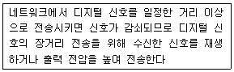
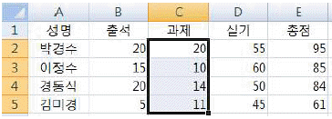
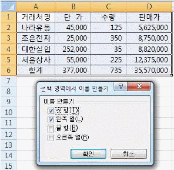
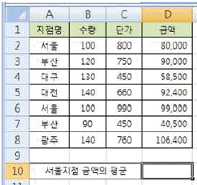
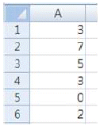
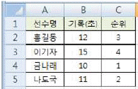
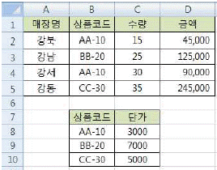
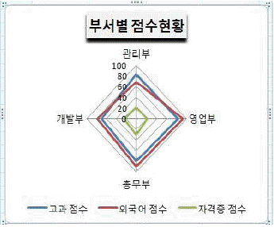
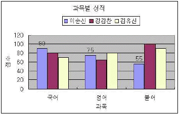

컴퓨터활용능력-2급 (2013-10-19 기출문제)
1과목: 컴퓨터 일반
1. 다음 중 컴퓨터를 이용하여 학습자에게 교육 내용을 설명하거나 연습 문제를 주어서 학습자가 개별적으로 학습을 진행하는 것을 가능하게 하는 교육 시스템을 의미하는 약어는?
- VOD
- CAI
- VCS
- PACS
(정답률: 61%)

2. 다음 중 멀티미디어의 발전 배경에 대한 설명으로 적절하지 않은 것은?
- 인터넷 기술의 발전
- 초고속 통신망 기술의 발전
- 컴퓨터의 보급과 아날로그 기술의 발전
- 압축 기법과 같은 데이터 처리 기술의 발전
(정답률: 82%)
3. 다음 중 컴퓨터 범죄에 해당하지 않는 것은?
- 전자문서의 불법 복사
- 전산망을 이용한 개인 정보 유출
- 컴퓨터 시스템 해킹을 통한 중요 정보의 위조 또는 변조
- 웹 검색 엔진을 이용한 상품 검색
(정답률: 91%)
4. 다음 중 전자우편(E-mail)에 대한 설명으로 옳지 않은 것은?
- 송신자가 작성한 메일을 수신자의 계정에 전송하는 역할을 담당하는 프로토콜은 SMTP이다.
- 전자우편을 통해 한 사람이 동시에 여러 사람에게 동일한 전자우편을 보낼 수 있다.
- 멀티미디어 파일의 내용을 확인하고 실행시켜주는 프로토콜은 POP3이다.
- 불특정 다수에게 대량으로 보내는 광고성 메일을 스팸메일이라 한다.
(정답률: 73%)
5. 다음 중 인터넷 환경에서 파일을 송수신 할 때 사용되는 원격 파일 전송 프로토콜로 옳은 것은?
- DHCP
- HTTP
- FTP
- TCP
(정답률: 68%)
6. 다음 중 우리나라의 공식 인터넷주소자원을 관리하는 조직으로 IP주소와 도메인 이름의 등록 관리 뿐만 아니라 인터넷주소자원에 관한 정책연구, 제도개선, 인터넷 이용 활성화를 위한 지원, 국제 인터넷 주소관련 기구와의 협력 등의 업무를 수행하는 곳은?
- WWW-KR
- INTERNIC
- KRNIC
- KNC
(정답률: 67%)
7. 다음 중 한글 Windows XP에서 하드 디스크에 저장된 파일을 다시 정렬하는 단편화 제거 과정을 통해 디스크의 파일 읽기/쓰기 성능을 향상 시키는 프로그램으로 옳은 것은?
- 디스크 검사
- 디스크 정리
- 디스크 포맷
- 디스크 조각 모음
(정답률: 81%)
8. 다음 중 아래 내용이 설명하는 네트워크 장비는?

- 라우터
- 리피터
- 브리지
- 게이트웨이
(정답률: 67%)
9. 다음 중 컴퓨터의 특징에 관한 설명으로 옳지 않은 것은?
- 컴퓨터에서 사용되는 용어 중 ‘GIGO’는 입력 데이터가 옳지 않으면 출력 결과도 옳지 않다는 의미의 용어로 ‘Garbage In Garbage Out’의 약자이다.
- 호환성은 컴퓨터 기종에 상관없이 데이터 값을 동일 하게 공유하여 처리할 수 있는 것을 의미한다.
- 컴퓨터의 처리 속도 단위는 KB, MB, GB, TB 등으로 표현된다.
- 컴퓨터 사용에는 사무처리, 학습, 과학계산 등 다양한 분야에서 이용될 수 있는 특징이 있으며, 이러한 특징을 범용성이라고 한다.
(정답률: 61%)
10. 다음 중 플래시 메모리에 대한 설명으로 옳은 것은?
- 중앙처리장치와 주기억장치 사이에 위치하여 컴퓨터의 처리 속도를 향상시키는 역할을 한다.
- 보조기억장치의 일부를 주기억장치처럼 사용하는 메모리 관리 기법으로 주기억장치보다 큰 프로그램을 불러와 실행해야 할 때 유용하다.
- 주기억장치에 저장된 정보에 접근할 때 주소 대신 기억된 정보의 내용의 일부를 이용하여 직접 접근 하는 장치이다.
- 전기적인 방법으로 수정이 가능한 EEPROM을 개선한 메모리 칩으로, MP3 플레이어, 휴대전화, 디지털 카메라 등에 널리 사용된다.
(정답률: 70%)
11. 다음 중 컴퓨터에서 사용하는 레지스터(Register)에 관한 설명으로 옳지 않은 것은?
- CPU와 주기억장치의 속도 차이 문제를 해결하여 준다.
- 플립플롭(Flip-Flop)과 래치(Ratch)들을 연결하여 구성된다.
- 컴퓨터에서 사용하는 기억장치 중에서 처리 속도가 가장 빠르다.
- 처리할 명령어나 연산의 중간 결과 값 등을 일시적으로 저장한다.
(정답률: 43%)
12. 다음 중 모니터 화면의 이미지를 얼마나 세밀하게 표시 할 수 있는가를 나타내는 정보로 픽셀수에 따라 결정되는 것은?
- 재생률(refresh rate)
- 해상도(resolution)
- 색깊이(color depth)
- 색공간(color space)
(정답률: 91%)
13. 다음 중 자기 디스크에서 헤드가 지정된 트랙에 도착 하는 트랙 이동 시간을 나타내는 용어로 옳은 것은?
- 접근 시간(Access Time)
- 탐색 시간(Seek Time)
- 회전 지연 시간(Latency Time)
- 전송 시간(Transmission Time)
(정답률: 45%)
14. 다음 중 Windows XP에서 프린터 설정과 관련된 설명으로 옳지 않은 것은?
- 여러 개의 프린터를 한 대의 컴퓨터에 설치할 수 있다.
- 기본 프린터는 두 대까지 설치할 수 있으며 기본 프린터로 설정된 프린터는 삭제할 수 없다.
- 로컬 프린터와 네트워크 프린터 모두 기본 프린터로 설정이 가능하다.
- 스풀(SPOOL) 기능이 설정되면 인쇄 도중에도 다른 작업을 할 수 있는 병행처리 기능을 갖게 되어 컴퓨터의 활용성을 높여준다.
(정답률: 71%)
15. 다음 중 한글 Windows XP에서 [연결 프로그램] 메뉴에 대한 설명으로 옳지 않은 것은?
- 내 컴퓨터나 Windows 탐색기에서 특정한 파일을 더블 클릭했을 때 실행될 프로그램을 설정하는 것이다.
- 프로그램이 지정된 파일에서 [열기]를 선택하면 자동으로 연결 프로그램에서 설정된 프로그램이 실행된다.
- 확장자에 의해 연결 프로그램이 결정되므로 확장자가 다르면 연결 프로그램도 달라야 한다.
- 일반적으로 응용 프로그램을 설치하면 해당 프로그램에서 사용하는 파일은 연결 프로그램이 자동으로 설정된다.
(정답률: 60%)
16. 다음 중 언어 번역 프로그램에 대한 설명으로 옳지 않은 것은?
- 컴파일러에 입력되는 프로그램을 원시 프로그램이라 하고, 기계어로 출력되는 프로그램을 목적 프로그램이라 한다.
- 인터프리터는 원시 프로그램을 입력으로 받아 기계어를 생성하고 이를 실행해서 그 결과를 출력하여 주는 프로그램이다.
- 어셈블리 언어는 어셈블러라고 하는 언어 번역기에 의해서 기계어로 번역된다.
- 언어번역 프로그램에는 컴파일러, 어셈블러, 인터프리터 등이 있다.
(정답률: 50%)
17. 다음 중 Windows XP에서 파일을 삭제한 후 복원할 수 없는 경우로 옳은 것은?
- USB 메모리에 저장된 파일을 삭제한 경우
- [탐색기] 창에서 바탕 화면의 파일을 선택하고 바로가기 메뉴의 [삭제]를 선택하여 파일을 삭제한 경우
- [내문서] 창에 있는 파일을 <Delete>키를 눌러서 삭제한 경우
- [탐색기] 창에서 바탕 화면의 파일을 마우스를 이용하여 휴지통으로 드래그하여 삭제한 경우
(정답률: 70%)
18. 다음 중 Windows XP 탐색기에서 사용하는 바로 가기키에 대한 설명으로 옳지 않은 것은?
- <F4> : 선택한 파일/폴더의 이름 변경하기
- <F3> : 검색
- <F1> : 도움말 보기
- <F5> : 목록 내용을 최신 정보로 수정
(정답률: 66%)
19. 다음 중 Windows XP의 [디스플레이] 등록정보 창에서 설정 가능한 항목으로 옳지 않은 것은?
- 바탕화면의 배경 그림을 변경할 수 있다.
- 화면에 표시되는 픽셀수를 변경할 수 있다.
- 화면의 손상을 방지하도록 움직이는 이미지를 표시하는 화면 보호기를 설정할 수 있다
- 읽기 쉽도록 구성된 색상과 글꼴을 사용하기 위한 고대비를 설정할 수 있다.
(정답률: 47%)
20. 다음 중 한글 Windows XP의 [제어판]-[프로그램 추가/제거]-[Windows 구성 요소 추가/제거]에서 선택 가능한 Windows 구성 요소로 옳지 않은 것은?
- 프린터 서비스
- 관리 및 모니터링 도구
- 네트워킹 서비스
- 보조프로그램 및 유틸리티
(정답률: 43%)
2과목: 스프레드시트 일반
21. 다음 중 필터링에 대한 설명으로 옳지 않은 것은?
- 자동 필터를 사용하여 데이터를 필터링하면 셀 범위나 표 열에서 원하는 데이터를 쉽고 빠르게 찾아 작업할 수 있다.
- 데이터에 필터를 적용하면 지정한 조건에 맞는 행만 표시되고 나머지 행은 숨겨진다.
- 자동 필터에서는 여러 열에 동시에 '또는(OR)' 조건으로 결합시킬 수 없다.
- 필터를 사용하려면 기준이 되는 필드를 반드시 오름차순이나 내림차순으로 정렬해야 한다.
(정답률: 53%)
22. 다음 중 피벗 테이블 보고서에 관한 설명으로 옳지 않은 것은?
- 피벗 테이블 보고서를 작성한 후에 사용자가 새로운 수식을 추가하여 표시할 수 있다.
- 원본데이터가 변경되는 즉시 피벗 테이블 보고서의 데이터도 자동으로 변경된다.
- 피벗 테이블 보고서는 현재 작업중인 워크시트나 새로운 워크시트에 작성할 수 있다.
- 피벗테이블을 삭제하더라도 피벗테이블과 연결된 피벗 차트는 삭제되지 않고 일반 차트로 변경된다.
(정답률: 64%)
23. 다음 중 데이터 유효성 검사에서 유효성 조건의 제한대상으로 '목록'을 설정하였을 때의 설명으로 옳지 않은 것은?
- 목록의 원본으로 정의된 이름의 범위를 사용하려면 등호(=)와 범위의 이름을 입력한다.
- 유효하지 않은 데이터를 입력할 때 표시할 메시지 창의 내용은 [오류 메시지] 탭에서 설정한다.
- 드롭다운 목록의 너비는 데이터 유효성 설정이 있는 셀의 너비에 의해 결정된다.
- 목록 값을 입력하여 원본을 설정하려면 세미콜론(;)으로 구분하여 입력한다.
(정답률: 63%)
24. 다음 중 조건부 서식에 대한 설명으로 옳지 않은 것은?
- 조건부 서식의 규칙별로 다른 서식을 적용할 수 있다.
- 해당 셀이 여러 개의 조건을 동시에 만족하는 경우 가장 나중에 만족된 조건부 서식이 적용된다.
- 조건을 수식으로 입력할 경우 수식 앞에 등호(=)를 반드시 입력해야 한다.
- 조건부 서식에 의해 서식이 설정된 셀에서 값이 변경되어 조건에 만족하지 않을 경우 적용된 서식은 바로 해제된다.
(정답률: 49%)
25. 다음 중 워크시트 상에서 매크로를 연결할 수 없는 양식 컨트롤의 유형은?
- 레이블
- 텍스트 필드
- 단추
- 확인란
(정답률: 43%)
26. 아래 시트에서 [C2:C5] 영역을 선택하고 선택된 셀들의 내용을 모두 지우려고 할 경우 다음 중 결과가 다르게 나타나는 것은

- 키보드의 <Back Space>키를 누른다.
- 마우스의 오른쪽 버튼을 눌러서 나온 바로가기 메뉴 에서 [내용 지우기]를 선택한다.
- [홈]-[편집]-[지우기] 메뉴에서 [내용 지우기]를 선택한다.
- 키보드의 <Delete>키를 누른다.
(정답률: 75%)
27. 다음 중 아래 그림과 같이 [선택 영역에서 이름 만들기]를 실행한 결과에 대한 설명으로 옳지 않은 것은

- 수식에서 ‘수량’이라는 이름을 사용하면 [C2:C6]영역이 참조된다.
- =COUNTA(거래처명) 이라는 수식을 실행하면 화면에는 15가 표시된다.
- [B2:B6] 영역의 이름은 '단 가'로 정의된다.
- 이름 상자에서 '합계'를 선택하면 [B6:D6] 영역이 선택된다.
(정답률: 50%)
28. 다음 중 워크시트에 2234543 숫자를 입력한 후 사용자 지정 표시 형식을 설정하였을 때, 화면에 표시되는 결과로 옳지 않은 것은
- 형식: #,##0.00
결과: 2,234,543.00 - 형식: 0.00
결과: 2234543.00 - 형식: #,###,"천원"
결과: 2,234천원 - 형식: #％
결과: 223454300％
(정답률: 67%)
29. 아래 워크시트에서 [D10] 셀에 '서울' 지점 금액의 평균을 계산하는 수식으로 적합하지 않은 것은?

- =AVERAGEIF(A2:A8,A2,D2:D8)
- =AVERAGE(D2,D6)
- =DAVERAGE(A1:D8,D1,A2)
- =SUMIF(A2:A8,A2,D2:D8)/COUNTIF(A2:A8,A2)
(정답률: 50%)
30. 다음 중 워크시트 작업 및 관리에 대한 설명으로 옳지 않은 것은?
- 시트 삭제 작업은 실행을 취소할 수 없다.
- <Shift> + <F10> 키를 누르면 현재 시트의 뒤에 새 워크시트가 삽입된다.
- 그룹화 된 시트에서 데이터 입력 및 편집 등의 작업을 실행하면 그룹 내 시트에 동일한 작업이 실행된다.
- 연속된 시트의 선택은 <Shift>키를 사용하면 편리 하다.
(정답률: 56%)
31. 다음 중 매크로의 특징에 대한 설명으로 옳지 않은 것은?
- 매크로를 기록할 때 리본 메뉴에서의 탐색은 기록된 단계에 포함되지 않는다.
- 매크로로 작성한 내용은 필요에 따라 삭제, 편집이 가능하다.
- '절대 참조'를 이용하면 현재 셀의 위치에 따라 작업의 대상이 되는 영역을 달리할 수 있다.
- 매크로는 반복적인 작업이나 시간이 많이 걸리는 작업을 보다 신속하게 처리하기 위해 사용된다.
(정답률: 60%)
32. 다음 중 아래 시트를 이용한 수식의 실행 결과가 나머지와 다르게 나타나는 것은?

- =MOD(A3,A6)
- =MODE(A1:A6)
- =MEDIAN(A1:A6)
- =SMALL(A1:A6,3)
(정답률: 46%)
33. 아래 그림과 같이 ‘기록(초)’ 필드를 이용하여 순위 [C2:C5]를 계산하였다. 다음 중 [C2] 셀의 수식으로 옳은 것은?

- =RANK(B1,$C$2:$C$5)
- =RANK(B2,$A$2:$A$5)
- =RANK(B2,$B$2:$B$5,1)
- =RANK(B2,$B$2:$B$5,0)
(정답률: 46%)
34. 아래 워크시트는 ‘수량’과 ‘상품코드’별 단가를 이용하여 금액을 산출한 것이다. 다음 중 [D2] 셀에 사용된 함수식으로 옳은 것은? (금액 = 수량 × 단가)

- =C2*VLOOKUP(B2,$B$8:$C$10, 1, 1)
- =B2*HLOOKUP(C2,$B$8:$C$10, 2, 0)
- =C2*VLOOKUP(B2,$B$8:$C$10, 2, 0)
- =C2*HLOOKUP($B$8:$C$10, 2, B2)
(정답률: 59%)
35. 다음 중 엑셀 창의 오른쪽 하단에서 선택할 수 없는 페이지 보기 방식은?
- 기본
- 확대/축소
- 전체 화면
- 페이지 나누기 미리 보기
(정답률: 45%)
36. 다음 중 전체 항목의 합에 대한 각 항목의 비율을 나타 내기에 적합한 차트는?
- 혼합형 차트
- 원형 차트
- 방사형 차트
- 영역형 차트
(정답률: 59%)
37. 다음 중 아래 차트에 대한 설명으로 옳지 않은 것은?

- 데이터 계열이 중심점에서 외곽선으로 나오는 축을 갖는다.
- 여러 데이터 계열의 집계 값을 비교할 때 사용한다.
- 같은 계열에 있는 모든 값들이 선으로 연결되며, 각 계열마다 축을 갖는다.
- 두 데이터 계열에서 최적의 조합을 찾는데 유용하다.
(정답률: 53%)
38. 다음 중 아래 차트에 설정되어 있지 않은 차트 구성 요소는?

- 차트 제목
- X (항목) 축 보조 눈금선
- 데이터 레이블
- 범례
(정답률: 68%)
39. 다음 중 [창]-[틀 고정]에 대한 설명으로 옳지 않은 것은?
- 셀 포인터의 이동에 상관없이 항상 제목 행이나 제목 열을 표시하고자 할 때 설정한다.
- 제목 행으로 설정된 행은 셀 포인터를 화면의 아래쪽으로 이동시켜도 항상 화면에 표시된다.
- 제목 열로 설정된 열은 셀 포인터를 화면의 오른쪽으로 이동시켜도 항상 화면에 표시된다.
- 틀 고정을 취소할 때에는 반드시 셀 포인터를 틀 고정된 우측 하단에 위치시키고 [창]-[틀 고정 취소]를 클릭해야 한다.
(정답률: 52%)
40. 여러 페이지 분량의 시트를 인쇄하고자 한다. 다음 중 각 페이지 상단에 작성자의 이름을 넣기 위해 [페이지 설정] 대화상자에서 설정해야 할 옵션은?
- 메모
- 머리글
- 페이지 이름
- 인쇄 영역
(정답률: 62%)